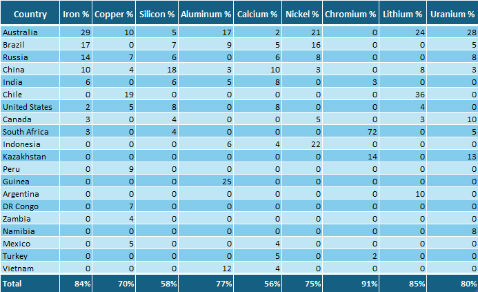

The Periodic Table is a structured chart that organizes all known chemical elements based on their atomic number (number of protons)
and recurring chemical properties.
The periodic table currently has 118 confirmed elements, ranging from Hydrogen (with 1 atomic number) to Oganesson (with 118 atomic number).
At room temperature, about 11 are gases, 2 are liquids (mercury and bromine), and the remaining 105 are solids.
Lets connect some of the important elements with the geography of our planet. In the below map, you can see the distribution of some key elements across the world.
This map highlights how the availability of certain elements can influence the economic and industrial development of different regions around the world.
This map shows the distribution of the above critical elements across the top 20 countries, while the remaining share
is distributed among other countries worldwide. It also indicates that some minerals are more concentrated than others.
There may be additional countries that hold a significant share globally,
but due to limited data and technological constraints, they are not included in this map.

Copyright © Abdullah Ameen